🇩🇪 🇫🇷 🇪🇸 🇮🇹 🇵🇱 🇸🇪 🇷🇺 🇺🇦
🇨🇳 🇯🇵
🇨🇦 🇦🇺 🇬🇧 🇺🇸
Luce MAX
Novità della versione 4.1.0?
Novità della versione 4.0.3?
Novità della versione 4.0.1?
Novità della versione 4.0.0?
Tocca per visitare il nostro gruppo utenti su Facebook!
Novità della versione 3.1.6?
Novità della versione 3.1.5?
Novità della versione 3.1.4?
Novità della versione 3.1.3?
Novità della versione 3.1.1?
Novità della versione 3.1.3?
Novità della versione 3.1.1?
Widget migliorato per la posizione attuale.
Novità della versione 3.0.7?
La versione 3.0 è stata notevolmente migliorata, con l'integrazione dei dati lunari, quattordici nuovi pannelli dati grafici e oltre un centinaio di miglioramenti. In particolare, raggiunge un'efficienza energetica tre volte maggiore rispetto alle versioni precedenti.
Scorri verso il basso per vedere ciascuno dei 14 nuovi pannelli dati. Quando utilizzi l'app, tocca qualsiasi pannello per accedere a funzionalità aggiuntive.
 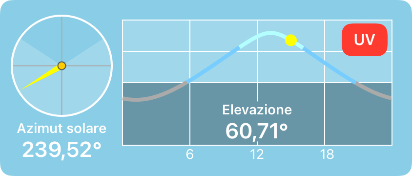
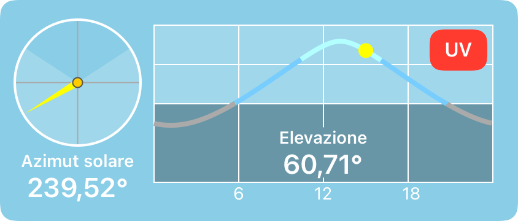

 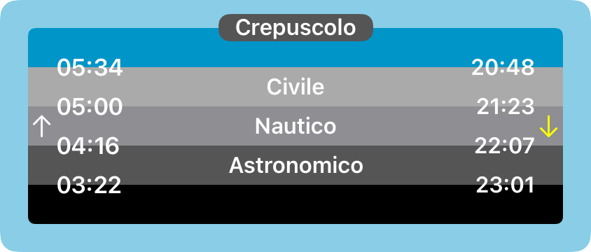
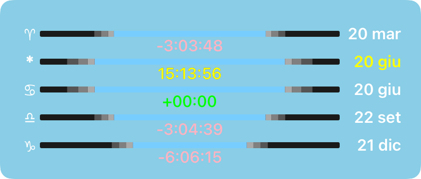
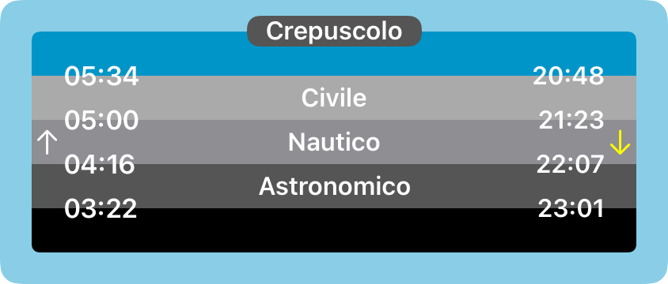
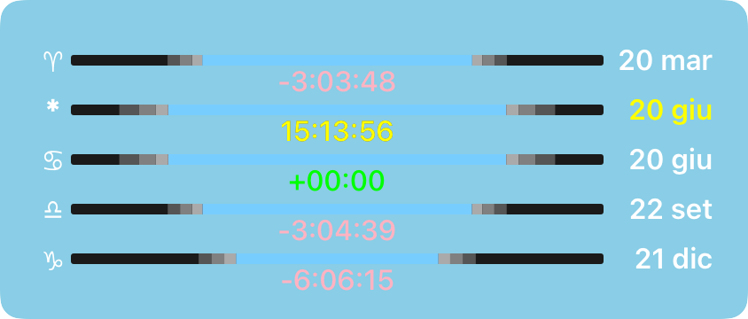

 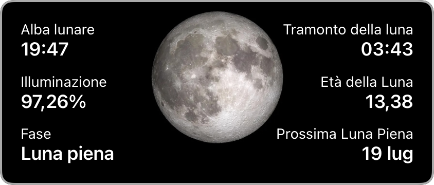
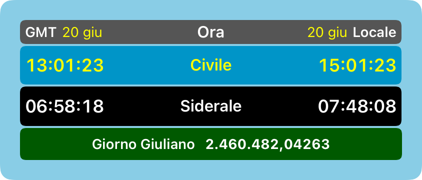
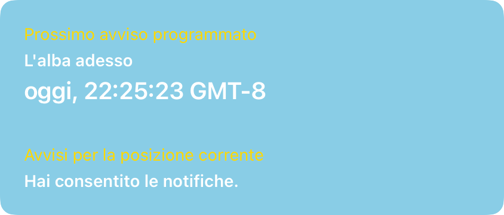
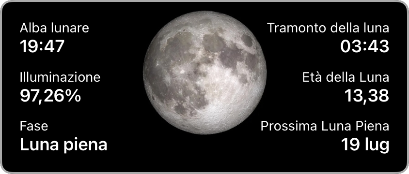
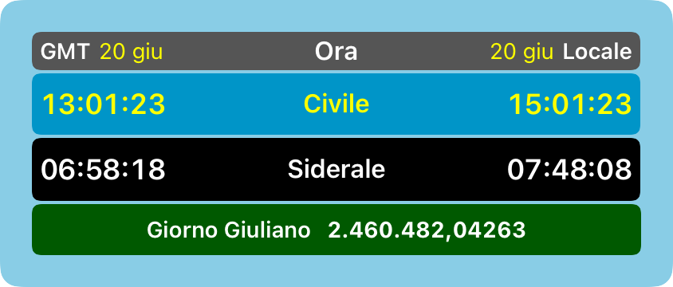
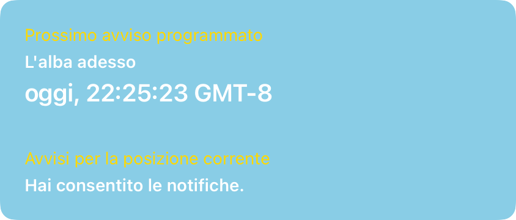

 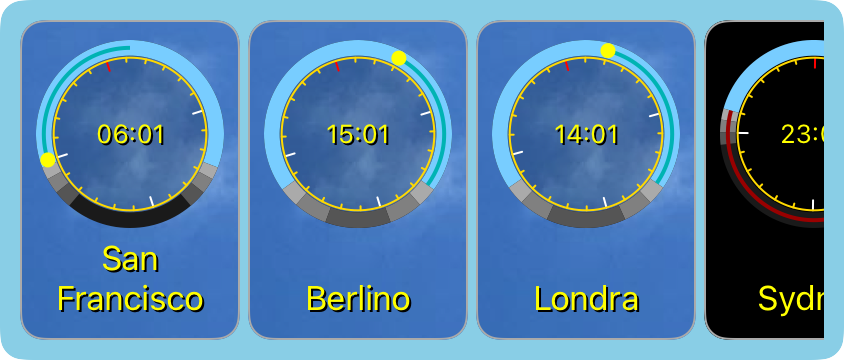
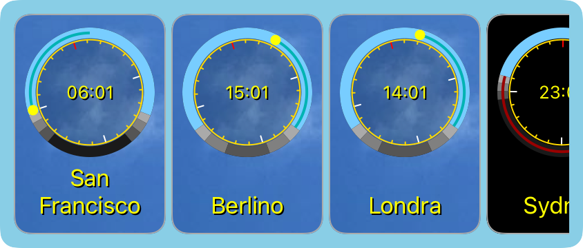
Pannello parasole
Visualizza l'alba, mezzogiorno, il tramonto, la durata del giorno e le variazioni rispetto al giorno precedente. Tocca per esplorare in date e orari diversi.
Pannello solare di elevazione
Visualizza l'elevazione solare e l'azimut. Tocca per esplorare in date e orari diversi.
Pannello della posizione
Visualizza informazioni su posizione, altitudine e fuso orario. Tocca per visualizzare la mappa e salvare più posizioni.
Pannello delle distanze
Visualizza la distanza dalla posizione corrente, dall'equatore e dal polo più vicino. Tocca per visualizzare la mappa e salvare più posizioni.
Pannello Crepuscolare
Visualizza gli orari del crepuscolo. Tocca per esplorare in date e orari diversi.
Pannello Equinozio
Visualizza informazioni sulla durata del giorno per equinozi e solstizi, insieme al giorno corrente. Tocca per esplorare in date e orari diversi.
Pannello dell'equazione del tempo
Visualizza informazioni sull'equazione del tempo, per gli appassionati di meridiane. Tocca per esplorare in date e orari diversi.
Pannello di confronto
Confronta la latitudine, la durata del giorno e l'elevazione solare di due località . Tocca per esplorare in date e orari diversi.
Pannello Luna
Visualizza il sorgere e il tramontare della luna, la fase lunare e l'illuminazione. Tocca per esplorare in date e orari diversi.
Pannello Elevazione Luna
Visualizza l'elevazione e l'azimut della Luna. Tocca per esplorare in date e orari diversi.
Pannello astronomia
Visualizza l'ora GMT e locale, civile e siderale, nonché il giorno giuliano. Tocca per esplorare date e orari diversi.
Pannello Filmati e Report
Visualizza i pulsanti per creare un filmato o generare un report. Tocca per creare e visualizzare un filmato o un report.
Pannello delle notifiche
Mostra lo stato delle notifiche che hai impostato. Tocca per gestire le notifiche.
Pannello Impostazioni
Visualizza i pulsanti per gestire le impostazioni, tra cui Opzioni, Autorizzazioni, Valutazioni e recensioni e Informazioni sull'app, Privacy e Supporto. Tocca per selezionare opzioni, rivedere le autorizzazioni, valutare e recensire questa app e ottenere la versione dell'app e altre informazioni.
Pannello Statistiche
Visualizza i dati sull'utilizzo dell'app. Tocca per vedere come questi dati vengono mantenuti privati.
Pannello cronologia
Visualizza le posizioni che hai visitato di recente nell'app.